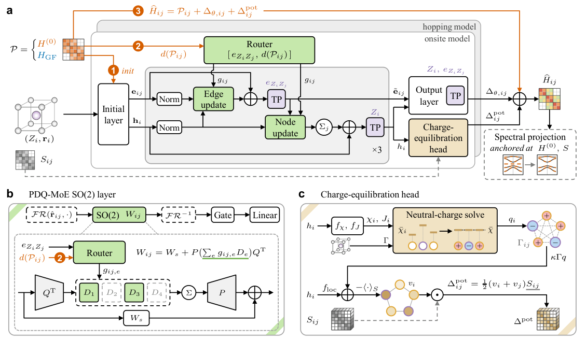
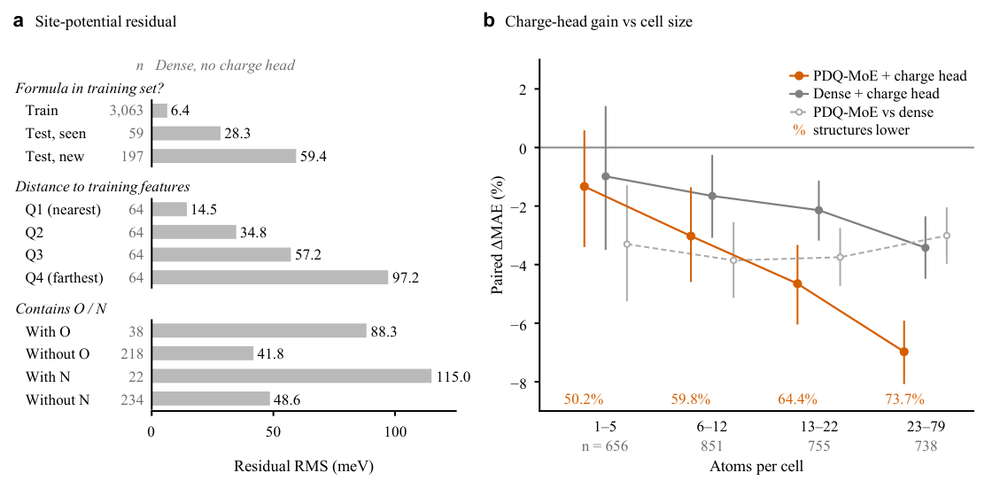
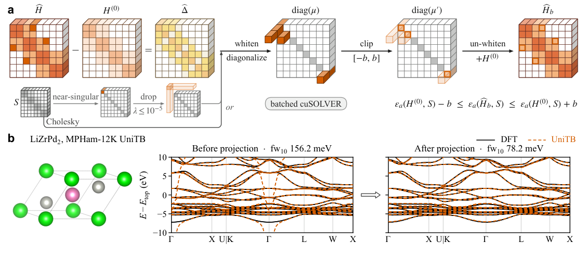
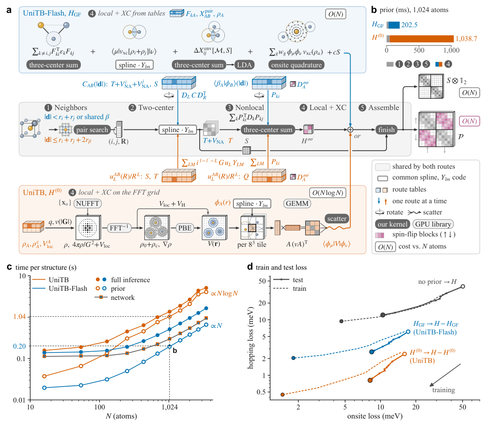
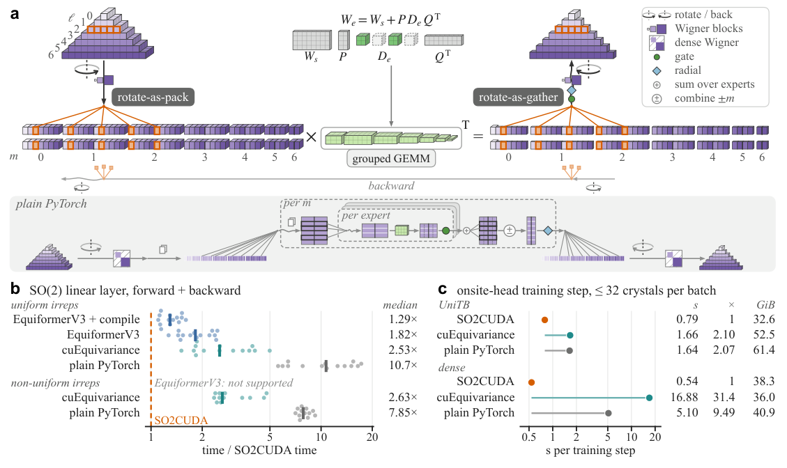
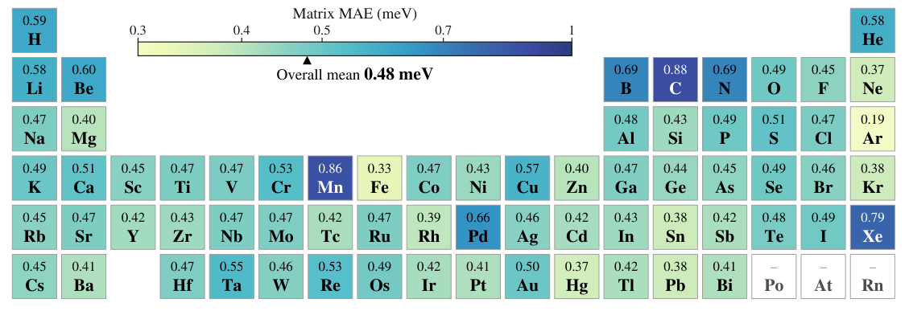
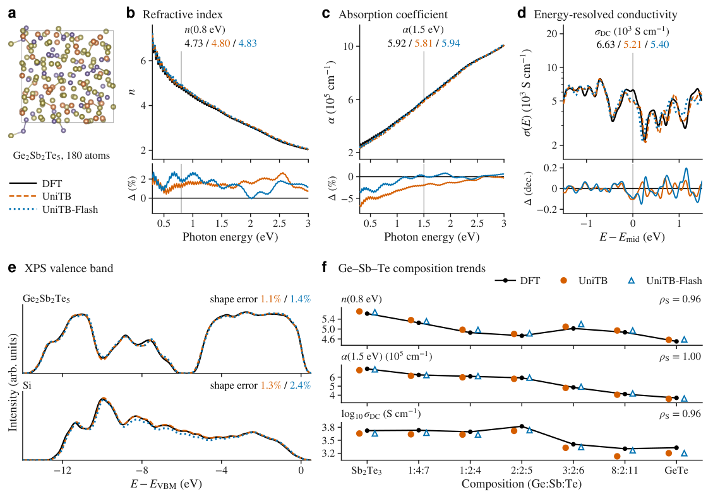
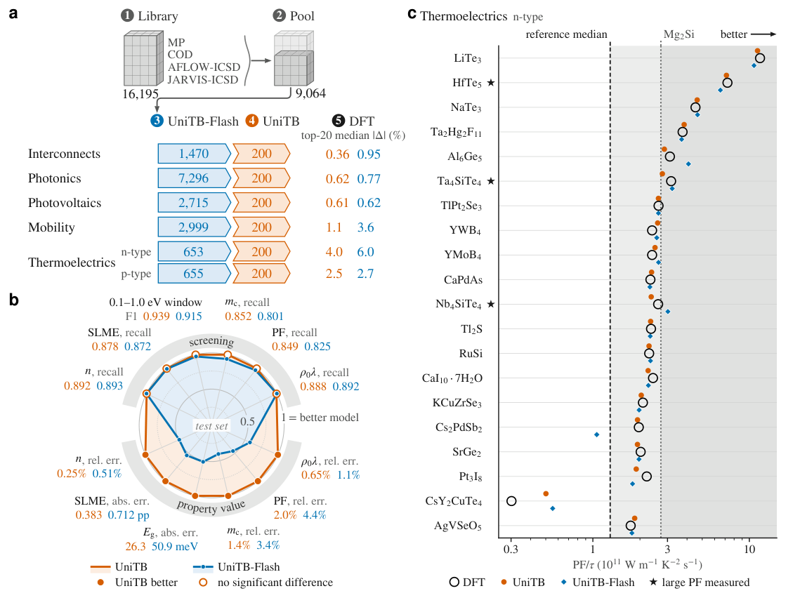

UniTB：以紧束缚物理组织通用哈密顿量学习，把晶体知识迁移到非晶电子性质
论文原文 ↗论文：Physical structure as an organizing principle for universal Hamiltonian learning
作者：Mingkang Liu、Zhanghao Zhouyin、Guanghui Wang、Daye Zheng、Lei Shen、Qiangqiang Gu
来源：arXiv，2026-10-26，2610.36135
链接：官方页面 · 论文 PDF
代码：作者计划在正式发表时公开训练、推理、先验组装和 SO2CUDA 代码。
为什么通用哈密顿量模型值得做？
材料的折射率、吸收和电子输运都由电子结构决定。常规 DFT 为了获得电子结构，需要反复更新电子密度、构造哈密顿量并求解电子态，直到自洽。遇到数百原子的非晶模型，或者需要筛选上万种材料，这个循环就很昂贵。
哈密顿量学习试图直接从原子结构预测电子所感受到的量子算符。在局域原子轨道基组下，这个算符写成矩阵 H：同一个原子内部的矩阵块称为 onsite，体现轨道能级及周围晶体场；不同原子之间的 hopping 块，描述轨道间的耦合。再配合描述基函数重叠的矩阵 S，求解 Hc＝εSc，就能得到能带和电子态，并进一步计算多种电子性质。与直接预测一个带隙或折射率相比，学 H 提供的是可以反复用于不同下游计算的中间物理对象。
已有方法能学习 H，但通用化还需要同时解决三个问题：不同元素和成键环境如何共享知识；小小的矩阵误差如何避免产生错误电子态；在大体系中，准备网络输入的物理先验本身怎样足够便宜。UniTB 以紧束缚理论组织这三件事，最终展示了一个很有吸引力的能力：只用晶体训练，却能预测非晶 Ge–Sb–Te 的光学、电导及其随组成变化的趋势。
从一个原子结构到哈密顿量：先有物理底稿，再学习改动
以一个 Ge₂Sb₂Te₅ 非晶超胞为例，输入是元素、坐标和晶胞。UniTB 首先把各原子的中性电子密度叠加起来，构造尚未进行自洽迭代的先验哈密顿量 H⁽⁰⁾。它已经含有原子轨道、赝势和周围原子产生的势场信息，但电子尚未根据真实环境重新分配。
网络学习的是这个底稿到自洽 DFT 结果的差值。最终矩阵由三部分构成：
预测 H ＝ 物理先验 P ＋ 局域等变网络修正 Δθ ＋ 电荷平衡产生的势修正 Δpot。
这里的“等变”是说，旋转材料后，轨道矩阵会按照对应的数学规则变换，网络输出也遵守这些规则。作者用两个独立训练、架构相同的网络分别预测 onsite 和 hopping 块，因为二者依赖环境的方式不同；网络以原子和原子对为节点、边，经过三层相互作用更新，再输出各轨道对的残差矩阵。

图1：先验、按环境选择的专家和电荷平衡共同构造哈密顿量。
这种“物理底稿＋学习修正”实质上缩小了学习任务。在同样的 MPHam-12K 数据和训练预算下，完全不使用先验、直接学完整 H，矩阵 MAE 为 11.66 meV；以更便宜的无网格先验为底稿，降至 3.08 meV；以 H⁽⁰⁾ 为底稿，降至 0.813 meV。这比单纯把物理量作为额外输入更深入：先验决定了网络究竟要解释哪一部分电子结构。
同一种元素对，也根据周围环境选择不同专家
一个 Ge—Te 原子对在不同配位与局域环境中，其哈密顿量块并不相同。UniTB 的混合专家模块因此不是只按元素标签分配网络。它先从该原子对的先验矩阵块提取旋转不变量——结构整体转动后数值不变、但能够反映环境的描述——再结合元素对类型，在四个专家中选两个参与计算，另有一个始终工作的共享映射。
先验块之所以有用，是因为其中已经包含周围中性原子的势场。尤其是 onsite 块，其晶体场来自整个邻域，仅知道原子对距离还不够。作者将路由输入改成“元素对＋距离”时，onsite 误差增加 8.82%；对 hopping 块，距离已经能表达较多环境信息。这使专家分工有了具体物理依据，而不是简单堆叠更多子网络。
电荷转移由整个晶胞共同求解
中性原子叠加先验没有体现真实的原子间电荷转移，而电荷重新分配产生的势可以延伸到局域网络截断之外。UniTB 因此借用了自洽电荷密度泛函紧束缚方法（SCC-DFTB）的组织形式。
网络先为每个原子输出电负性 χ 和硬度 J：前者刻画获得或失去电子的倾向，后者刻画改变电荷的代价。然后把这些局域信息与原子间的长程静电核放在一起，在晶胞总电荷为零的约束下求解电荷平衡，获得各原子的潜在电荷 q。由 q 和局域网络读出得到原子势 v，再按轨道重叠矩阵把势加回 H；对原子 i、j 之间的块，形式为 ½(vᵢ＋vⱼ)Sᵢⱼ。
这些电荷通过哈密顿量标签端到端训练，无需另准备一套原子电荷标签。其作用是为局域网络增加全晶胞协调的电荷响应。图4中，加入这一模块后，晶胞越大，矩阵误差下降越明显；对含23—79个原子的测试晶胞，PDQ-MoE 的平均误差下降约6.98%。

图4：电荷相关残差及电荷平衡模块随晶胞尺寸变化的收益。
不只把矩阵预测准，还让它求出合理的谱
非正交原子轨道之间会有重叠，所以求能带需要同时处理 H 和 S。当 S 的某些方向接近线性相关时，H 中很小的误差也可能在求解中被放大，产生 DFT 中没有的“幽灵态”：例如突然穿进带隙的一条假能带。仅追求平均矩阵误差小，并不能自动处理这一问题。
作者利用 H⁽⁰⁾ 的物理性质构造约束：从中性原子先验到自洽结果，主要改变的是局域有效势，因此它造成的有序能级偏移应受到势变化幅度的限制。具体做法是先在 S 定义的度量下，把预测残差转换到正交表示，再将其谱中超出 ±10 eV 的值截到边界，最后变回原表示，加回 H⁽⁰⁾。于是每一条按顺序排列的预测能级，都被约束在相应先验能级上下10 eV之内。

图5：相对先验的谱投影及其消除 LiZrPd₂ 假能带的效果。
在200个能带测试结构上，经过投影的 UniTB 在作者的严格判据下没有出现幽灵态。LiZrPd₂ 是直观例子：投影前有一条错误能带穿入关注窗口，处理后消失，沿能带路径的平均误差从156.2降至78.2 meV。这个步骤把物理信息落实到了实际求谱时的构造中，使预测矩阵更适合继续计算光学和输运性质。
UniTB-Flash 为什么更快？
原版 H⁽⁰⁾ 要在覆盖晶胞的网格上计算 Hartree 和交换关联势。即使不做完整自洽，这一准备工作仍随晶胞增大而增长。UniTB-Flash 把底稿换成 HGF 无网格先验：将元素对之间的双中心积分预先制表，推理时按原子间距离查询，并按键方向旋转到实际结构；环境势和交换关联贡献则通过有限范围的原子项及相应近似组装。
对于固定轨道范围和正常原子密度，每个原子的相关邻居数有界，因此这个先验及重叠、自旋翻转块的组装量随原子数 N 线性增长。原版网格先验在固定密度下则为 O(N log N)。网络结构基本相同，区别在于 Flash 底稿更便宜，同时需要网络学习更大的残差。

图2：两种先验的构造、时间增长和残差学习难度。
在一块 H200 GPU 上，为3,456原子的 PbTe 超胞从结构生成稀疏 H 和 S，UniTB 用时5.11秒，UniTB-Flash用时1.65秒，约快三倍；之后求能带、光学和输运是后续计算步骤。Flash 的较大残差也带来精度差异：完整测试集上的矩阵 MAE 为1.694 meV，原版为0.493 meV。谱投影则根据各自先验的物理形式选择：原版相对 H⁽⁰⁾ 投影；Flash 的残差还包含先验近似造成的非局域误差，因此采用自身的重叠正交化流程。
作者还把网络中反复出现的 SO(2) 张量运算做成 SO2CUDA GPU 内核。其做法是把旋转、按专家整理数据和输出收集融合起来，将许多分散的小矩阵运算变成成组矩阵乘法。真实晶体批次上，UniTB onsite 网络每个训练步由普通 PyTorch 的1.64秒降至0.79秒。这个内核也面向其他采用 SO(2) 卷积的等变模型，包括机器学习原子势。

图8：SO2CUDA 的融合计算流程与算子、训练步加速。
得到的能力一：覆盖68元素，并从晶体迁移到非晶
最终模型用29,242个晶体训练，标签来自包含自旋轨道耦合的非磁性 PBE 计算。在2,431个非磁性测试晶体中，跨68种元素的平均矩阵 MAE 为 0.48 meV；每个元素所涉及结构的平均值都低于0.9 meV。在完整3,000个结构测试集上，UniTB 的 MAE 为0.493 meV，同先验、同预算的稠密基线为0.559 meV。

图3：UniTB 在68元素非磁性测试结构上的矩阵误差。
更有意义的检验是晶体训练之外的无序结构。作者选取180—198原子的12个 Ge–Sb–Te 超胞，以及216原子的硅超胞，直接预测 H，然后用与 DFT 哈密顿量相同的后处理计算性质。对 GST，折射率影响光子器件的相态对比，吸收系数影响光进入薄膜的深度，直流电导则关系到存储单元读取的电阻。

图6：仅用晶体训练的模型预测非晶 GST 的光学、电导和价带谱。
在12个 GST 超胞上，UniTB 对0.8 eV折射率的平均相对误差为 1.77%，对1.5 eV吸收系数为 1.73%，直流电导的平均误差为 0.084个十进制数量级；Flash 对应为1.98%、0.79%和0.062个数量级。在七种组成之间，两种模型与 DFT 的折射率、电导排序相关系数均为0.96，吸收为1.00。
这说明模型保留了合金组成变化所带来的电子性质趋势，而不仅是重建某一个结构的矩阵。对计算得到的价带光电子能谱，UniTB 在 GST 上的平均谱形误差为1.00%，在硅超胞上为1.17%，也展示了从晶态训练迁移到无序局域环境的能力。
得到的能力二：快模型排序，精模型复算，最后交给 DFT
材料筛选不要求第一步就把所有数值做到最准确，更重要的是先保留值得投入计算的候选。作者在测试集的六种任务上分别比较排序或分类表现和性质数值误差：两种模型的筛选得分没有显著差异，原版 UniTB 的性质误差则低42—59%。由此形成两阶段方案：Flash 先处理大库，UniTB 再精算短名单。

图7：两阶段材料筛选、排序与数值精度比较，以及热电候选结果。
实际材料库有16,195个公开晶体，按非磁性、稳定性、组成和重复结构等规则形成9,064个不同结构的候选池，覆盖互连金属、高折射率材料、光伏吸收体、高迁移率半导体和热电材料五类应用。Flash 在各池按对应电子性质排序，UniTB 复算每类前200个，再用 DFT 检查 UniTB 的前20个；热电中的 n 型和 p 型分别排名。
热电任务比较的是300 K、载流子浓度10²⁰ cm⁻³、常弛豫时间近似下的功率因子除以弛豫时间 PF/τ。DFT 结果中，20个 n 型候选有19个超过经典参考材料的中位数，六个超过这组参考中最强的 Mg₂Si。LiTe₃ 和 HfTe₅ 的 PF/τ 分别达到 Mg₂Si 的4.30倍和2.66倍。名单也包含已有大功率因子实验报道的 HfTe₅、Ta₄SiTe₄ 和掺杂 Nb₄SiTe₄；LiTe₃、NaTe₃ 则被作者列为此前尚未作为热电材料研究的候选。
第二阶段也会改变筛选组成。例如 Rb₁₄ZnGe₁₆ 的导带有效质量由 Flash 的0.083 mₑ修正为0.401 mₑ，使其退出最终高迁移率名单。快模型因此承担的是大范围优先级判断，精模型负责更细的性质评价，随后通过 DFT 收束最终结果。
对领域的贡献在哪里？
UniTB 把通用电子结构学习推进到了一条较完整的材料计算链：原子结构—可计算的物理先验—环境专门化与电荷响应—受约束的哈密顿量谱—光学和输运—多应用材料筛选。其中紧束缚物理分别决定了参数怎样共享、远程电荷怎样进入、谱怎样保持合理，以及先验怎样低成本组装。
最值得关注的是晶体到非晶的电子性质迁移，以及“速度与数值精度分工”的筛选方式。对于想从原子模拟结构继续研究光学、电导、热电或组成效应的工作，这类通用哈密顿量模型提供了比单一性质回归更丰富的下游计算入口。
原始摘要完整中文翻译
密度泛函理论（DFT）能够给出材料的电子结构，但其计算成本限制了大超胞计算和材料筛选。机器学习哈密顿量能够绕过自洽循环，但通常针对特定体系；通用模型则有望覆盖新的组成与无序固体。这类模型必须在不同化学体系间泛化，使下游性质保持物理合理，同时在大晶胞上维持较低成本。
本文提出 UniTB，一种通用的 E(3) 等变哈密顿量表示框架，将源于密度泛函紧束缚理论的物理先验与深度学习相结合。UniTB 的网络修正一个先验哈密顿量，通过由该先验路由的混合专家，以及类似自洽电荷紧束缚方法的电荷平衡输出模块，实现跨化学体系的泛化。一个投影步骤限制了能带相对先验的偏移，抑制虚假态，并使下游性质保持物理合理。我们为该网络提供了速度最快的 SO(2) 张量积 GPU 内核。变体 UniTB-Flash 利用双中心表格，以关于原子数 N 的 O(N) 成本组装其先验，而网格方法的成本为 O(N log N)。在29,242个晶体上训练后，UniTB 在覆盖68种元素的非磁性测试晶体上达到0.48 meV的矩阵元误差。无需非晶训练数据，两种模型都能与 DFT 给出的非晶 Ge–Sb–Te 光学性质和电导率相吻合。UniTB-Flash 对候选的排序与 UniTB 没有显著差异，而 UniTB 的性质数值更准确；两者联合筛选了16,195个晶体，面向五个具有工业相关性的应用领域。